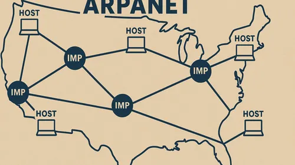

A Internet surgiu para conectar computadores e facilitar a troca de informações entre pessoas e instituições. Com o passar dos anos foram desenvolvidas tecnologias que tornaram essa comunicação mais rápida e acessível, dando origem à World Wide Web, utilizada atualmente por bilhões de pessoas.
| Ano | Acontecimento | Importância |
|---|---|---|
| Década de 1960 | Primeiras redes de computadores | Início das pesquisas que deram origem à Internet. |
| 1969 | ARPANET | Primeira rede de computadores, considerada a precursora da Internet. |
| 1983 | TCP/IP | Passou a ser o protocolo padrão para a comunicação entre redes. |
| 1983 | DNS | Permitiu acessar computadores utilizando nomes de domínio em vez de endereços IP. |
| 1989 | Tim Berners-Lee | Propôs a criação da World Wide Web no CERN. |
| 1990 | HTML, HTTP e Servidor Web | Foram desenvolvidos o HTML, o protocolo HTTP e o primeiro servidor Web. |
| 1991 | Primeiro Navegador | A Web foi disponibilizada ao público por meio do primeiro navegador. |
| Atualidade | Web Moderna | Aplicações interativas, redes sociais, streaming, comércio eletrônico e serviços online. |
| A evolução da Internet e da Web transformou a forma como as pessoas se comunicam, estudam, trabalham e compartilham informações. | ||
Tim Berners-Lee é um cientista da computação britânico, reconhecido como o criador da World Wide Web. Em 1989, enquanto trabalhava no CERN, desenvolveu a ideia de conectar documentos por meio de hiperlinks, criando também tecnologias fundamentais como o HTML, o HTTP e o primeiro navegador web. Sua contribuição transformou a maneira como as pessoas acessam e compartilham informações pela Internet.

A ARPANET foi a primeira rede de computadores de grande alcance, criada em 1969 pelo Departamento de Defesa dos Estados Unidos. Seu principal objetivo era permitir a comunicação entre computadores localizados em diferentes instituições de pesquisa. Essa rede serviu como base para o desenvolvimento da Internet e influenciou diversas tecnologias utilizadas até os dias atuais.